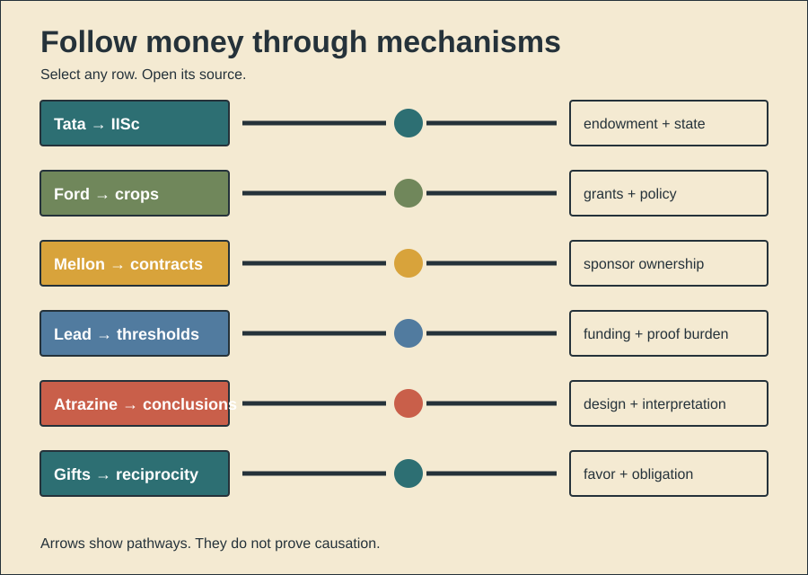

HISTORY INVESTIGATION
History Investigation — 28 September 2026, 02:00 Réunion
Unpublished draft. Prepared for WordPress. No website upload occurred.
01
Who actually built IISc?
Documented fact. Jamsetji Tata used wealth. He proposed a university. His 1898 endowment followed. Mysore supplied 371 acres. Mysore also funded construction. Colonial government funded remainder. IISc formed during 1909. Students entered during 1911. Chemistry opened first. Electrical technology also opened. Research soon supported factories. The Tata family persisted. Dorabji continued negotiations. Benefits. India gained research capacity. Scientists later built programs. Applied research supported industry. Scholarly interpretation. Family wealth opened possibilities. Government partnership created reality. The institution was collaborative. Philanthropy selected scientific modernization. Colonial approval constrained execution. Criticism emerged by 1936. Reviewers called work academic. Regional recruitment drew concern. Counterevidence and limits. Patronage proves no capture. Tata died before opening. Public actors held power. Mysore contributions were decisive. Later scholars gained autonomy. Factory counts show application. They cannot measure welfare. Motives remain partly interpretive. Records support institution-building. They reject sole-founder mythology.
141 body words
02
What followed targeted grants?
Documented fact. Edsel Ford founded Ford. Family shares built its endowment. The foundation funded agriculture. Ford and Rockefeller created centers. IRRI opened during 1960. Ford made early grants. Researchers bred responsive crops. Governments supplied irrigation. Credit supported fertilizer purchases. New wheat spread quickly. New rice also spread. Benefits. Grain yields increased. Food prices fell. Famine risks declined. Research spared some cropland. Scholarly interpretation. Grants favored measurable yields. Institutions spread one model. State policy magnified it. Private money gained agenda power. Harms. Rain-fed regions benefited later. Larger farmers adapted sooner. Water demand increased. Fertilizer use caused damage. Crop diversity also narrowed. Counterevidence and limits. Seeds caused no harm alone. Subsidies encouraged input misuse. Public agencies made choices. Farmers retained some agency. Yield gains helped poor consumers. Later research found land-sparing. Ford acted with partners. Therefore, Ford caused no revolution alone. The record supports catalytic funding. Distribution depended upon policy. Environmental outcomes also varied.
152 body words
03
Who owned fellowship discoveries?
Documented fact. Andrew Mellon backed Duncan. Richard Mellon joined him. Their institute opened during 1913. Companies bought research fellowships. Sponsors selected defined problems. Scientists received facilities. Many trained there. Sponsors owned resulting discoveries. Publication initially waited three years. Later restrictions became tighter. More than 100 companies participated. Over 1,000 scientists trained. Researchers produced 1,600 patents. They also published 4,700 papers. Work supported synthetic rubber. It supported gas masks. Petrochemical ventures also emerged. Benefits. Industry gained research capacity. Young scientists gained careers. Public health studies examined smoke. Scholarly interpretation. Contracts directed scientific attention. Ownership converted knowledge privately. Delayed publication protected sponsors. It also slowed public scrutiny. Counterevidence and limits. Secrecy was not absolute. Thousands of papers appeared. Independent research later expanded. Corporate problems sometimes served society. Patents can fund development. Archive counts measure outputs. They cannot establish usefulness. No single rule proves suppression. The system mixed education, profit, and discovery. Its conflict was structural.
156 body words
04
Who carried proof burdens?
Documented fact. Ethyl gasoline caused poisonings. Five workers died during 1924. Industry supported Robert Kehoe. Cincinnati housed his laboratory. Companies funded its lead research. Kehoe measured workers repeatedly. His studies advanced toxicology. They also treated exposure thresholds. Industry demanded contrary proof. Regulators accepted that framework. Clair Patterson later measured contamination. His geochemical work challenged baselines. Environmental lead proved widespread. Benefits. Long studies produced exposure data. Occupational toxicology gained methods. Scholarly interpretation. Sponsorship narrowed acceptable questions. The burden favored continued sales. Company access strengthened Kehoe. Alternative evidence faced resistance. Harms. Leaded fuel remained common. Children accumulated exposure. Low-level harms gained recognition later. Counterevidence and limits. Kehoe published real measurements. Historical standards differed. Industry funding disproves no datum. Patterson also faced uncertainties. Regulation required several evidence streams. Later historians document influence. They cannot assign every delay. The strongest finding concerns structure. One funded laboratory dominated access. That dominance shaped policy.
148 body words
05
Did sponsorship predict outcomes?
Documented fact. Syngenta sells atrazine. It funded toxicology studies. Tyrone Hayes first participated. He later worked independently. His frog studies reported effects. Other studies reported fewer effects. A 2016 systematic review compared studies. Industry sponsorship predicted favorable conclusions. Sponsored studies also had weaknesses. Yet pooled effect estimates differed less. EPA reviewed many experiments. Its 2007 review rejected amphibian effects. Later ecological reviews continued. Benefits. Registrant studies supplied required evidence. Atrazine supports crop production. Monitoring produced extensive water data. Scholarly interpretation. Funding influenced study design. It also influenced interpretation. Outcome differences need no fabrication. Methods can create divergence. Harms. Biased evidence can delay safeguards. Attacks can chill independent work. Counterevidence and limits. Hayes's findings faced replication disputes. EPA identified methodological flaws broadly. Sponsorship proves no false result. Independent studies also vary. Regulatory conclusions changed with endpoints. The 2016 review found complex patterns. Funding predicted conclusions most clearly. Causation remains difficult. Transparent protocols reduce uncertainty.
154 body words
06
Why can gifts influence?
Documented evidence. Humans often return benefits. Repeated interaction rewards reciprocity. Reputation extends that mechanism. Cross-cultural experiments find variation. They also find cooperation. Modern gifts can trigger obligation. Drug companies fund meals. They also pay physicians. Reviews associate payments with prescribing. Associations span many specialties. Larger payments show stronger links. Timing sometimes precedes changes. Evolutionary interpretation. Reciprocity supported cooperation. Small groups met repeatedly. Memory exposed non-repayment. Reputation guided partner choice. Modern institutions exploit these tendencies. A meal feels personal. Its commercial purpose recedes. Benefits. Reciprocity sustains trust. It supports mutual aid. Industry contact can educate. Samples can assist patients. Harms. Obligations can distort judgment. Recipients may deny influence. Patients cannot observe exchanges. Counterevidence and limits. Evolution predicts no prescription. Culture shapes gift rules. Payments and prescribing remain observational. Companies may target frequent prescribers. Reviews cannot remove all confounding. Direct reciprocity is one mechanism. Norms and incentives matter. Disclosure helps observers. Separation reduces pressure.
152 body words
